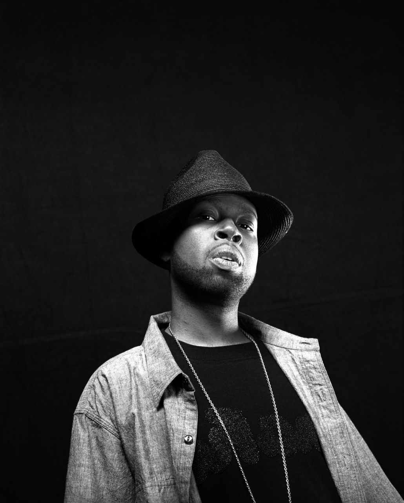
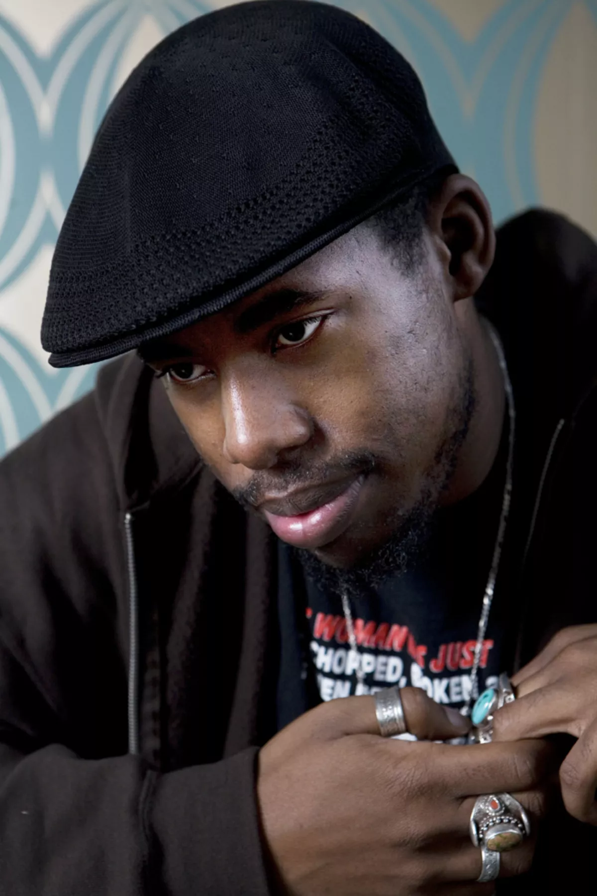
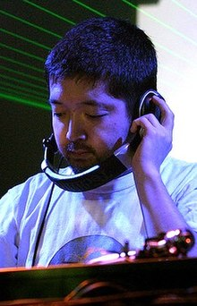

Noah's Favorite Producers
Created by Noah Charbonnet Jones.
J dilla

Bio
- James Dewitt Yancey was born on Feb 7th, 1974 and passed away on Feb 10th, 2006.
- Collaborated with Erykah Baduh, Busta Rhymes, Slum Village, Janet Jackson, and many more.
- Hardware/Software of choice: Akai MPC
Style
J Dilla is known for his ability to microchop samples into dreamlike sequences.
For example, he transformed Jadakiss's song Why originally a reflection on societal issues—into a meditative piece about how death isn’t truly the end.
Music
Donuts by J Dilla
Flying Lotus

Bio
- Steven Ellison was born on October 7th, 1983.
- He has collaborated with Kendrick Lamar, Thundercat, Erykah Baduh, Snoop Dogg, Mac Miller, and Herbie Hancock.
- Hardware/Software of choice: Flying Lotus being a more modern producer has a large supply of technology when making music this includes but is not limited to Akai MPC, Reason Studios, Ableton suite, and more.
Style
His sound is a blend of various genres, including but not limited to dreamscape, hip-hop, soul, and electronic. His influences are equally unique.
Flying Lotus draws inspiration more from his environment than his formal musical background, with key influences ranging from Cartoon Network and Nintendo to Marvel Comics.
Music
Los Angeles by Flying Lotus
Nujabes

Bio
- Seba Jun was born on Febuary 7th, 1974 and passed away on Febuary 26th, 2010.
- Collaborated with Shing02, Fat Jon, Uyama Hiroto, Substantial, and Cise Starr
- Composed the soundtrack for the anime "Samurai Champloo"
- Hardware/software of choice: Akai MPC.
Style
His sound is a fusion of hip-hop, jazz, and atmospheric soundscapes. He skillfully uses soulful samples in a way that envelops the listener in a sense of tranquility and peace.
When you listen to Nujabes, he evokes a deep feeling of nostalgia, even if it's your first time hearing his music.
Music
Modal Soul by Nujabes